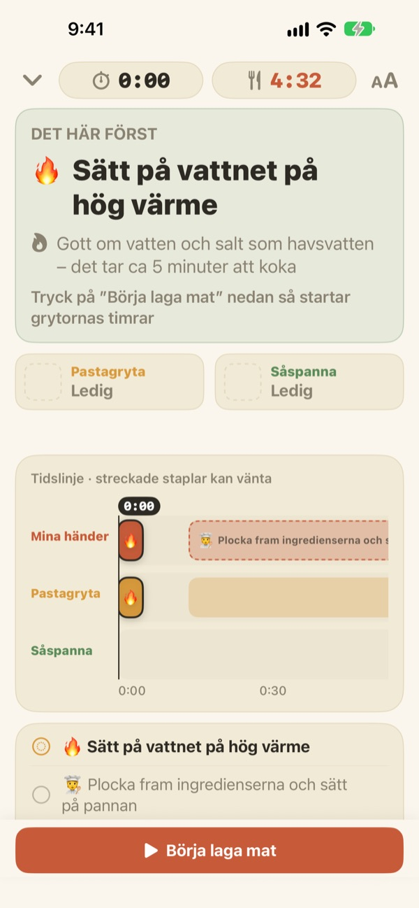
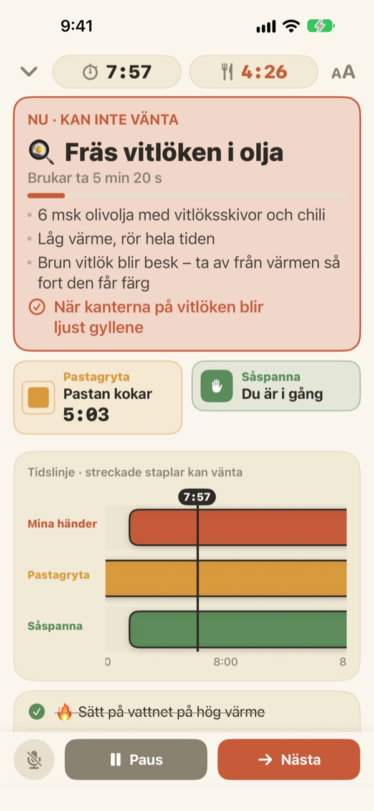
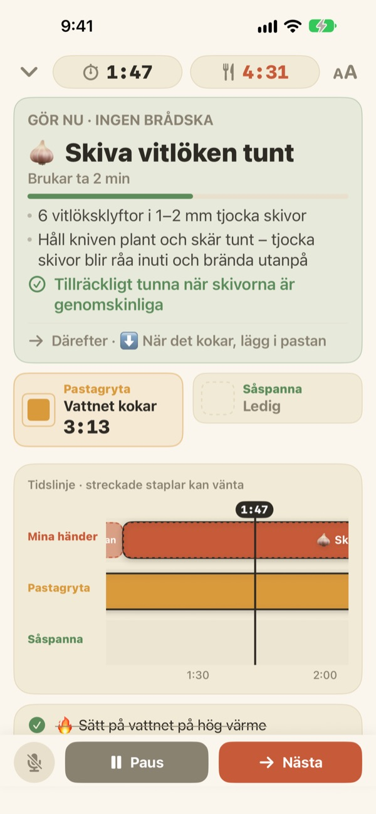
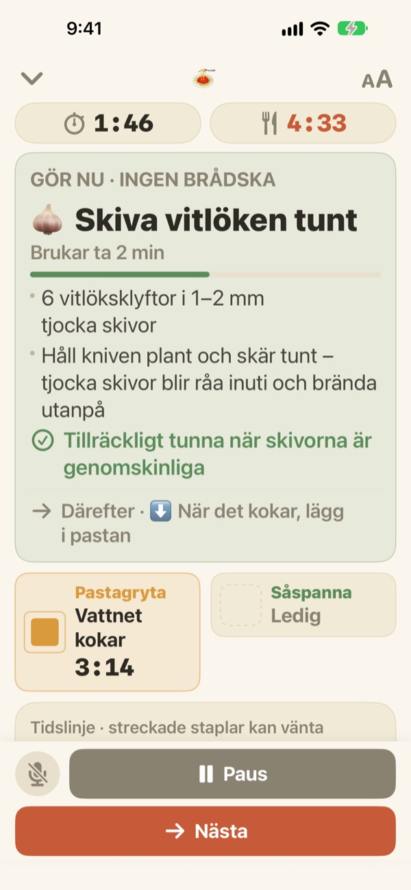

Pastan kokar.
Under tiden blir såsen klar.
När två grytor går i olika takt visar Geusaie med stor text den enda sak dina händer ska göra just nu. Såsen räknas baklänges från stunden då pastan ska hällas av.
Alla funktioner är gratis. Inget konto behövs.

Testa själv
Laga en portion aglio e olio i 20 gånger fart. Tryck på Börja laga mat och sedan på Nästa varje gång du skulle ha gjort klart en uppgift. Se hur kortet ändras när det är dags att hälla av pastan.
Tre timers igång och ändå blev pastan mjuk?
En timer för pastan, en för såsen och vitlöken i huvudet, och plötsligt vet du inte vad som kommer först. Du står och skär precis när pastan ska hällas av, och såsen blir två minuter sen. Geusaie känner receptet som ”först det här, sedan det där” och säger bara den enda sak du ska göra nu.
Det som inte kan vänta blir rött
Hälla av pastan, vitlök precis innan den bränns: när en uppgift skulle förstöra maten om den blev sen blir kortet terrakottafärgat och ber dig lägga undan skärandet en stund.
När en gryta är klar får du en notis även om du inte tittar, tillsammans med det du ska göra direkt.

Skär när händerna är lediga
Skiva vitlök, riva ost, mäta upp: inget av det har en fast tid, så här räknas inga sekunder ner. Stapeln fylls medan händerna är lediga, stannar när en gryta ropar och fortsätter där du slutade.
Slår du på plattan tre minuter för sent flyttas allt därefter tre minuter. Planen räknas om utifrån vad du faktiskt har gjort.

Ställ den på bänken, gå vidare med rösten
Fyra textstorlekar så att du kan läsa på ett par stegs avstånd, och skärmen släcks inte medan du lagar mat.
Blöta händer? Säg nästa så går appen vidare till nästa uppgift utan att du rör skärmen.

Tre steg till middag
- 1
Välj en rätt
Du ser ungefär hur lång tid den tar och hur många grytor som behövs.
- 2
Tryck på Börja laga mat
Först visas din första uppgift, och grytornas klockor startar när du trycker.
- 3
Klar? Nästa.
Tryck på knappen eller säg ”nästa”, så dyker nästa uppgift upp.
Färgen visar hur bråttom det är
- Grönt
- Förberedelser. Ta det lugnt.
- Senapsgult
- En gryta behöver dig. Gör det nu, men utan stress.
- Terrakotta
- Väntar du blir pastan mjuk eller vitlöken bränd. Gör det nu.
- Grytrutor
- Kvadraten som krymper är tiden som är kvar. Grytornas tid döljs aldrig.
På tidslinjen är streckade staplar uppgifter som kan vänta.
Alla funktioner är gratis
Gratis
- Båda recepten
- En timer för varje gryta och hela tidslinjen
- Notis när en gryta är klar
- ”Nästa” med rösten
- Fyra textstorlekar
- Öppna ett recept med Siri eller Genvägar
Stötta utvecklaren (frivilligt)
- Om appen hjälper dig kan du ge en liten dricks i Inställningar
- Dricks låser inte upp något. Utan den har du fortfarande alla funktioner
Engångsbelopp, inte en prenumeration.
Inget konto, ingen reklam, och den fungerar utan internet.
Vanliga frågor
Jag säger ”nästa” men inget händer.
Mikrofonknappen längst ned till vänster är röd medan appen lyssnar och grå när den är avstängd. Första gången behöver du tillåta både mikrofon och taligenkänning. Om du sa nej kan du slå på dem igen i Inställningar > Geusaie. Appen lyssnar efter ordet som står på knappen Nästa. I ett väldigt bullrigt kök trycker du bara på Nästa.
En gryta blev klar men jag fick ingen notis.
Kontrollera att notiser är på i Inställningar > Notiser > Geusaie. Ett fokusläge kan tysta dem. Notiser kommer bara när en gryta är klar; förberedelserna stressar dig aldrig.
Vad händer med planen om jag börjar sent?
Den räknas om utifrån vad du faktiskt har gjort. Slår du på plattan tre minuter senare flyttas allt därefter tre minuter, och såsen räknas fortfarande baklänges från när pastan är klar.
Texten är för liten.
Tryck på knappen för textstorlek uppe till höger på matlagningsskärmen och välj Normal, Stor, Större eller Störst. Ditt val sparas.
Släcks skärmen medan jag lagar mat?
Nej. Skärmen är tänd medan du lagar mat, så du behöver aldrig röra den med blöta händer.
Vilka rätter finns med?
Aglio e olio (cirka 15 minuter, 2 grytor) och pasta i tomat- och gräddsås (cirka 20 minuter, 2 grytor), baserade på recept från Serious Eats, Gimme Some Oven, RecipeTin Eats och The Burnt Butter Table. Alla rätter med två grytor igång samtidigt passar bra, så berätta gärna vad du vill se.
Spelas min röst in?
Nej. Appen lyssnar bara efter ordet ”nästa” och spelar inte in eller sparar ljud. Om enheten stöder det sker taligenkänningen på själva enheten. Inga personuppgifter samlas in.
Kan jag öppna den med Siri?
Ja. Välj en rätt i Siri eller appen Genvägar så öppnas dess matlagningsskärm direkt. Klockorna startar först när du är redo att sätta på vattnet och trycker på Börja laga mat.
Vilka enheter fungerar den på?
iPhone och iPad med iOS 17 eller senare. Inget konto eller internet behövs.
Hur rapporterar jag ett fel eller föreslår ett recept?
Via Inställningar > Skicka feedback i appen, eller via mejl till adressen nedan. Ange gärna enhetsmodell och iOS-version så kan vi titta på det snabbare. Vi svarar oftast inom några dagar.
Har du kört fast, sett något konstigt eller har ett recept i tankarna? Skriv till leeo@kakao.com.